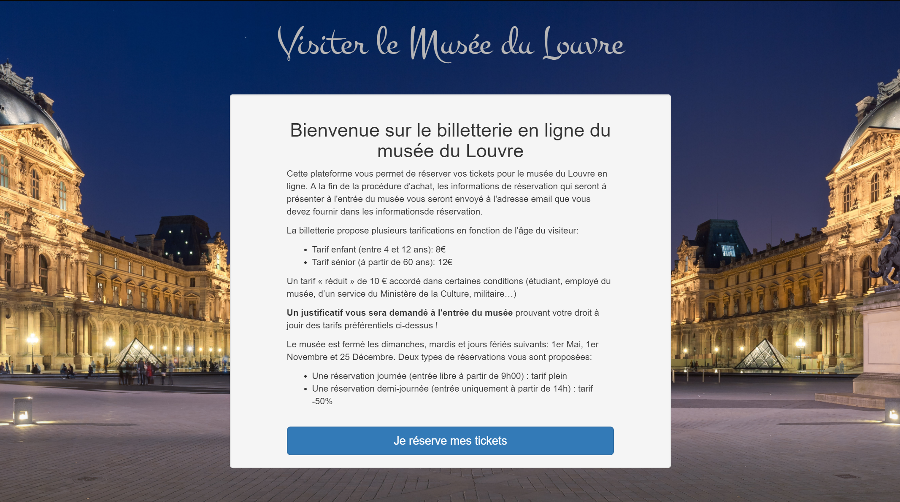

Welcome to my portfolio
-
Online ticketing service for the Louvre Museummore_vertOnline ticketing service for the Louvre Museumclose
This application, entirely built with Symfony is a robust system engineered to provide a ticketing service for the Louvre Museum.
It allows a user to book one or several tickets for the present day (or a future date) if the museum is open on that day. It also automatically renders the price according to the age of the ticket holder. Once the booking is finished a templated email including the booking information is sent to the buyer.This project was part of my online courses in web development at OpenClassrooms.
The technologies used are Symfony, a PHP framework, the template engine Twig, Bootstrap3, Jquery and JQueryUI for the front-end. The payment process is managed by the Stripe API.
-
Blog for a professional writermore_vertBlog for a professional writerclose
This is a basic CMS website with a very simple back-end providing all the necessary tools required for a wordpress type of blog. This application gives the user the ability to manage his articles, his account and the comments left for each article. The comment section, coded from scratch, allows subcomments and reporting.
This project was part of my online courses in web development at OpenClassrooms.
The technologies used are Silex, a PHP micro-framework, the template engine Twig, Bootstrap3 and Jquery for the front-end, and TinyMCE for the text formating of the articles